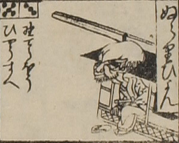

ぬらりひょん；ヌラリヒョン，男；オトコ

ぬらりひょん。頭部が大きく、額が広く禿げ上がっている。老人のような顔で、顎ひげを生やしている。駕籠から降りようとしている。
出典：親書誌：U426_nichibunken_0082：新版妖怪飛巡雙六；シンパンヨウカイトビマハリスゴロク／日付：2007／資源識別子：U426_nichibunken_0082_0020_0000
Copyright (c)2010- International Research Center for Japanese Studies, Kyoto, Japan. All rights reserved.